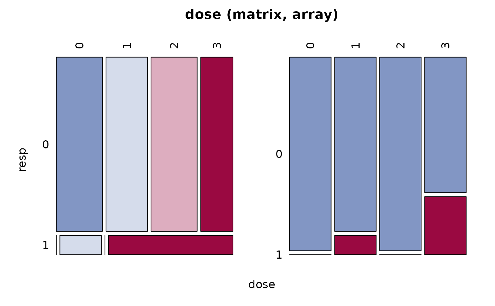

CochranArmitageTest.RdPerform a Cochran Armitage test for trend in binomial proportions across the levels of a single variable. This test is appropriate only when one variable has two levels and the other variable is ordinal. The two-level variable represents the response, and the other represents an explanatory variable with ordered levels. The null hypothesis is the hypothesis of no trend, which means that the binomial proportion is the same for all levels of the explanatory variable.
CochranArmitageTest(x, alternative = c("two.sided", "increasing", "decreasing"))
| x | a frequency table or a matrix. |
|---|---|
| alternative | a character string specifying the alternative hypothesis, must be one of |
A list of class htest, containing the following components:
the z-statistic of the test.
the dimension of the table.
the p-value for the test.
a character string describing the alternative hypothesis.
the character string “Cochran-Armitage test for trend”.
a character string giving the names of the data.
Agresti, A. (2002) Categorical Data Analysis. John Wiley & Sons
Andri Signorell <andri@signorell.net> strongly based on code from
Eric Lecoutre <lecoutre@stat.ucl.ac.be>
https://stat.ethz.ch/pipermail/r-help/2005-July/076371.html
# http://www.lexjansen.com/pharmasug/2007/sp/sp05.pdf, pp. 4 dose <- matrix(c(10,9,10,7, 0,1,0,3), byrow=TRUE, nrow=2, dimnames=list(resp=0:1, dose=0:3)) Desc(dose)#> ------------------------------------------------------------------------------ #> dose (matrix, array) #> #> Summary: #> n: 40, rows: 2, columns: 4 #> #> Pearson's Chi-squared test: #> X-squared = 6.6667, df = 3, p-value = 0.08332 #> Log likelihood ratio (G-test) test of independence: #> G = 7.2877, X-squared df = 3, p-value = 0.06327 #> Mantel-Haenszel Chi-squared: #> X-squared = 3.4667, df = 1, p-value = 0.06262 #> #> Warning message: #> Exp. counts < 5: Chi-squared approx. may be incorrect!! #> #> #> Phi-Coefficient 0.408 #> Contingency Coeff. 0.378 #> Cramer's V 0.408 #> #> #> dose 0 1 2 3 Sum #> resp #> #> 0 freq 10 9 10 7 36 #> perc 25.0% 22.5% 25.0% 17.5% 90.0% #> p.row 27.8% 25.0% 27.8% 19.4% . #> p.col 100.0% 90.0% 100.0% 70.0% . #> #> 1 freq 0 1 0 3 4 #> perc 0.0% 2.5% 0.0% 7.5% 10.0% #> p.row 0.0% 25.0% 0.0% 75.0% . #> p.col 0.0% 10.0% 0.0% 30.0% . #> #> Sum freq 10 10 10 10 40 #> perc 25.0% 25.0% 25.0% 25.0% 100.0% #> p.row . . . . . #> p.col . . . . . #> #>CochranArmitageTest(dose, "increasing")#> #> Cochran-Armitage test for trend #> #> data: dose #> Z = -1.8856, dim = 4, p-value = 0.02967 #> alternative hypothesis: increasing #>CochranArmitageTest(dose)#> #> Cochran-Armitage test for trend #> #> data: dose #> Z = -1.8856, dim = 4, p-value = 0.05935 #> alternative hypothesis: two.sided #>CochranArmitageTest(dose, "decreasing")#> #> Cochran-Armitage test for trend #> #> data: dose #> Z = -1.8856, dim = 4, p-value = 0.9703 #> alternative hypothesis: decreasing #># not exactly the same as in package coin: # independence_test(tumor ~ dose, data = lungtumor, teststat = "quad") lungtumor <- data.frame(dose = rep(c(0, 1, 2), c(40, 50, 48)), tumor = c(rep(c(0, 1), c(38, 2)), rep(c(0, 1), c(43, 7)), rep(c(0, 1), c(33, 15)))) tab <- table(lungtumor$dose, lungtumor$tumor) CochranArmitageTest(tab)#> #> Cochran-Armitage test for trend #> #> data: tab #> Z = -3.2735, dim = 3, p-value = 0.001062 #> alternative hypothesis: two.sided #>#> #> Chi-squared Test for Trend in Proportions #> #> data: tab[, 1] out of apply(tab, 1, sum) , #> using scores: 1 2 3 #> X-squared = 10.716, df = 1, p-value = 0.001062 #>